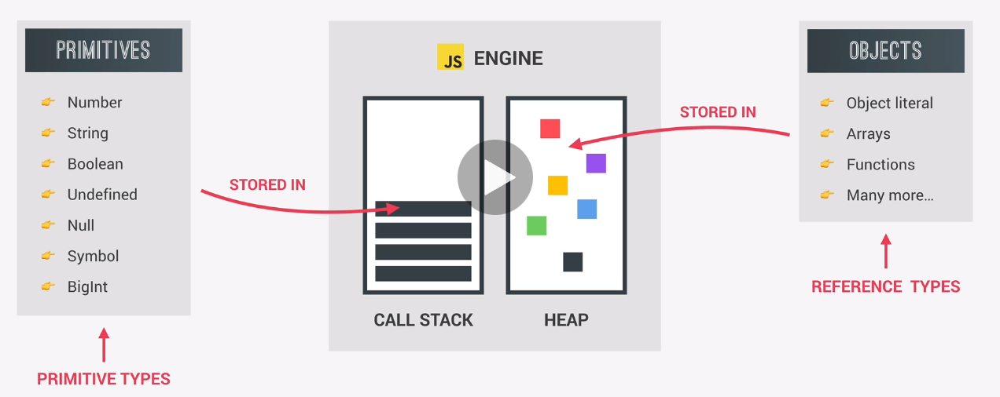

Primatives (called Primative Types) are data types that are NOT an Object and have no methods. They include:
These are stored in the Execution Context in which they were declared. FOr simplicity you could say they are stored in the Call Stack
They are immutable, meaning they cannot be changed.
Everything else are Objects and are called Reference Types.
These are stored in the HEAP since they could be too large to be stored in the Call Stack.
They are NOT immutable, meaning they CAN be changed.
This returns 30, then 31.
The original value of age is not altered since it appeared first in the code (and memory).
let age = 30
let oldAge = oldAge
age = 31
console.log(age)
console.log(oldAge)
Both Objects return 27 even though the first is set to 30.
When friend.age is changed, it also changes the original 'friend' Object in the HEAP.
This shows you can change the value of a constant as long as you're not changing the memory address in the HEAP.
NOTE: This means when you copy an Object, you're just creating a new variable that points to the Object.
const me = {
name: 'MyName',
age: 30
}
const friend = me
friend.age = 27
console.log('Friend: ', friend)
console.log('Me', me)
This returns:
Wrong passport: (different value) WHY? Video shows the opposite
LH234: (original value: flight is a primative. When passed into the function, a copy is created named flightNum. So, since it's a completely different variable, it is NOT reflected in the variable named 'flight' outside the function.
Object { name: "Mr. Jonas Schmedtmann", passport: 2734873843 }: (updated value: this is because jonas is a reference to the Object. Since you're passing by reference, the Object is just copied in memory HEAP, so it gets updated within the function.)
Passing a primative value into a function is the same as copying its value outside of the function. In this case: const flightNum = flight;. The value is copied and there are now 2 variables with different values.
Passing an Object into a function is referencing the original Object. So the values are updated in both locations. NOTE: This can be a bad idea when multiple function calls change the Object.
const flight = 'LH234';
const jonas = {
name: 'Jonas Schmedtmann',
passport: 12345
}
const checkIn = function (flightNum, passenger) {
flightNum = 'LH999';
passenger.name = 'Mr. ' + passenger.name;
if (passenger.passort === 12345) {
console.log('Check in');
}
{
console.log('Wrong passport')
}
}
checkIn(flight, jonas);
console.log(flight)
console.log(jonas)
JavaScript only allows passing by value.
It does NOT allow 'passing by reference' even though it looks like it.
When you pass in an Object, it appears like it's passing the reference, but it's actually passing a value into memory.
So, JavaScript can pass an reference into a function, but this is not passing BY reference.